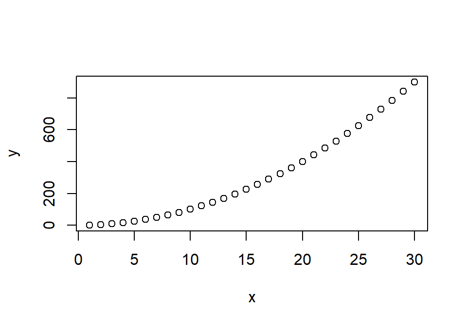
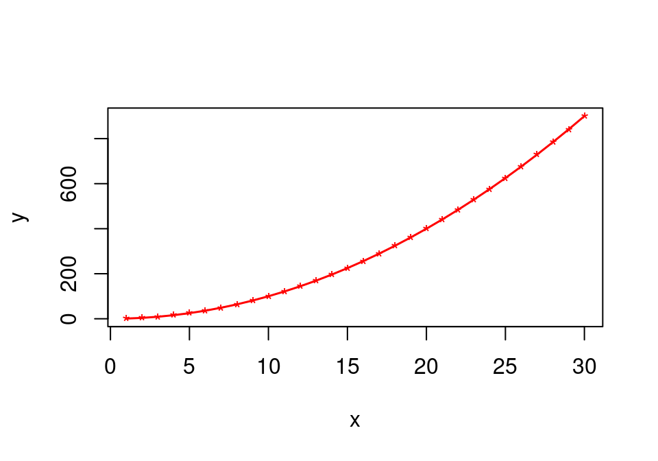

Chapter 10 R 프로그래밍 구조
R은 통계 및 데이터 처리를 위한 프로그래밍 언어이다. 모든 언어가 그렇지만 처음 언어를 배울 때는 여러 단어와 표현 패턴에 익숙해지는 과정을 거친다. 그러나 좀 더 정확하고 복잡한 표현을 하기 위해서는 단순히 표현 패턴을 익히는 것에서 벗어나 그 언어의 고유한 문법 체계를 이해하는 것이 필요하다.
R은 프로그래밍 언어이므로 프로그램 흐름을 제어하는 조건문과 반복문을 가지고 있다. 조건문은 조건에 따라 프로그램 흐름을 분기하고, 반복문은 조건에 따라 프로그램의 부분을 계속 반복 수행한다.
10.1 R 조건문
10.1.1 if 조건문
if-else 조건문
R은 if를 이용하여 조건문을 만든다. 표준적인 if-else 조건문은 다음 형식을 취한다.
statement1은 TRUE 또는 FALSE의 논리값을 결과로 주는 표현식이어야 한다. 예로 \(4 > 2\) 이나 \(x < 0\) 처럼 참 또는 거짓으로 판별될 수 있어야 한다. statement1이 참이면 statement2가 실행되고 statement1이 거짓이면 else 다음의 statement3이 실행된다. 그림 10.1의 (a)는 if-else 조건문에 의해 발생하는 프로그램의 제어 흐름은 보여준다.
Figure 10.1: 단순한 형태의 if 조건문에서의 제어 흐름
다음은 if-else 조건문의 예이다. x가 0보다 크면 y에 1이 할당되고 작거나 같으면 y에 0이 할당된다.
[1] 1만약 statement1 조건이 참이냐 거짓이냐에 따라 여러 문장이 함께 실행되어야 하면 다음과 같이 statment2나 statement3 표현식을 블록으로 만들면 된다. 다음 예에서 중괄호로 묶인 두 개의 블럭이 statement2와 statement3을 대체하고 있음을 볼 수 있다. 중괄호로 묶인 여러 표현식으로 구성된 블록은 마치 하나의 표현식처럼 동시에 평가가 이루어진다. 블록 표현식을 사용할 때 주의할 점은 statment2의 블록이 종료되는 같은 줄에 else가 기술되어야 한다는 것이다. 그래야 if-else 문이 하나의 명령으로 취급되어 처리된다.
[1] 0[1] "fail"단순 if 조건문
어떤 경우에는 조건이 만족하면 어떤 작업을 수행하지만, 그렇지 않은 경우에는 아무 것도 하지 않아야 할 때가 있다. 그러한 경우에는 다음처럼 else 부분이 제외된 단순한 형태의 if 조건문을 사용하면 된다. statement1이 참이면 statement2가 실행되는 것은 if-else 조건문과 마찬가지이지만, statement1이 거짓이면 statement2를 건너띄고 if 조건문 다음으로 프로그램의 실행 흐름이 넘어간다(그림 10.1의 (b) 참조). if-else 조건문과 마찬가지로 statement2는 블럭 표현식으로 대체될 수 있다.
다음 예는 x가 0보다 크면 n을 하나씩 증가시키지만, 그렇지 않은 경우에는 n을 증가시키지 않는 예이다.
[1] 1[1] 1복합 조건문
지금까지는 하나의 조건에 의해서 두 가지 방향으로 프로그램 실행이 분기되는 경우를 살펴보았다. 그런데 어떤 경우에는 조건에 따라 세 개 이상으로 프로그램 실행을 분기하고 싶을 때가 있다. 예를 들어, if-else 조건문의 예에서 x가 양수이면 y에 1을 부여하고 x가 0 이하이면 0을 부여하였는데, 이를 바꾸어 x가 양수이면 그대로 y는 1이지만, x가 0이면 0, x가 음수이면 -1을 넣고 싶다고 하자. 이럴 땐 어떻게 해야 할까? 이런 경우에는 다음처럼 else 다음의 statement3 부분에 또 다른 if 조건문을 넣으면 된다. 이렇게 else 이후에 또 다른 조건문을 실행하는 조건문을 복합 조건문이라고 한다.
> if (statement1) {
+ statement2
+ } else if (statement3.1) {
+ statement3.2
+ } else {
+ statement3.3
+ }이 경우 statement1이 TRUE이면 statement2가 실행되고 else 부분은 실행이 되지 않는다. statement1이 FALSE이면 statement2는 건너뛰고 첫번째 else 부분이 실행된다. 그런데 else 다음에 기술된 statement3이 단순한 실행문이 아니라 그 자체가 또 다른 if 조건문이다. 따라서 statement1이 FALSE인 경우에는 else의 if문이 실행되어 statement3.1 조건을 비교하고, statement3.1이 TRUE이면 statement3.2가 실행되고, FALSE이면 statement3.3이 실행된다. 그림 10.2의 (a)는 복합 조건문의 제어 흐름을 보여준다.
Figure 10.2: 복잡한 형태의 if 조건문에서의 제어 흐름
다음 예를 살펴보자. x가 0이므로 처음 조건은 FALSE가 되어 첫번째 else 부분이 실행된다. 두번째 조건은 TRUE이므로 statement3.2 부분이 최종적으로 실행된다. x의 값에 따라 어떤 부분이 실행되는지 확인해 보라.
> x <- 0
> if (x>0) {
+ print("statement2")
+ y <- 1
+ } else if ( x == 0 ) {
+ print("statment3.2")
+ y <- 0
+ } else {
+ print("statement3.3")
+ y <- -1
+ }[1] "statment3.2"[1] 0복합 조건문의 조건은 계속 추가될 수 있다. 앞의 예는 세 개의 분기를 가지고 있지만, 두번째 else 부분에 다시 if 문을 연결하면 네 개의 분기가 되도록 조건을 더 세분화할 수 있다.
중첩 조건문
복합 조건문이 else 부분에 if 조건문으로 꼬리를 물듯이 이어 나가면서 분기를 세분화한다면, 중첩 조건문은 if문의 statement2와 statement3의 안에 또 다른 if 문을 두어 분기를 세분화하는 경우이다. 그림 10.2의 (b)는 중첩 조건문의 제어 흐름을 보여준다.
> if (statement1) {
+ ...
+ if (statement2.1) {
+ statement2.2
+ } else {
+ statement2.3
+ }
+ ...
+ } else {
+ ...
+ if (statement3.1) {
+ statement3.2
+ } else {
+ statement3.3
+ }
+ ...
+ }다음 예를 살펴보자. if-else 조건문의 예처럼 x가 양수인지에 따라 y에 1 또는 0으로 부여하는 것뿐 아니라, x가 양수이고 홀수이면 z에 1을, 짝수이면 z에 2를 부여하고 싶다고 하자. 그리고 x가 0 이하이고 3의 배수이면 z에 3을, 3의 배수가 아니면 z에 4를 부여하고 싶다. 이러한 경우는 다음과 같은 중첩 조건문을 사용하면 쉽게 구현할 수 있다. 다음 예에서 x를 다양한 수로 바꾸어 가며 실행해 보라. 그리고 y와 z의 값이 어떻게 부여되는지 살펴보라.
> x <- 5
> if (x>0) {
+ y <- 1
+ if (x %% 2 == 0) z <- 2 else z <- 1
+ } else {
+ y <- 0
+ if (x %% 3 == 0) z <- 3 else z <- 4
+ }
> y; z[1] 1[1] 1중첩 조건문은 여러번 조건문을 중첩시킬 수 있다. 그러나 너무 많이 조건문을 중첩시키거나, 너무 복잡한 복합 조건문을 사용하는 것은 프로그램 흐름을 이해하기 어렵게 만들므로 되도록 피하는 것이 좋다.
조건문의 결과가 두 개 이상의 논리값을 주는 경우
지금까지 if 문의 statement1 조건에 들어가는 표현식이 하나의 논리값을 가진 경우만을 다루었다. 만약에 이 표현식의 결과가 길이가 2 이상인 논리값 벡터이면 어떻게 될까? 다음 예에서 보듯이 R은 조건의 논리값 결과가 2개 이상인 경우, 첫번째 논리값만 사용하여 분기를 실행한다. 그리고 이에 대한 경고 메시지를 출력한다.
[1] TRUE FALSE FALSEWarning in if (x > 0) y <- 1 else y <- 0: length > 1 이라는 조건이 있고, 첫번째
요소만이 사용될 것입니다[1] 1따라서 조건의 결과가 여러 개가 될 수 있는 경우에는 논리값 벡터의 어떤 요소를 사용할지를 특정하여 조건문을 실행하는 것이 좋다.
[1] 0복합 조건
지금까지의 예는 statement1에 단순 조건을 사용하였다. 어떨 때는 AND나 OR 등의 논리값 연산자로 단순 조건을 연결하여 복합 조건을 만들어 statement1에 부여하는 것이 프로그램을 간단하게 만들 수 있다. 다음 예를 살펴 보자. x와 y가 모두 0보다 크면 두 수의 합을 출력하지만 그렇지 않으면 두 수가 모두 0 이상이어야 한다는 경고 메시지를 출력하도록 해 보자. 물론 이를 다음처럼 중첩 또는 복합 조건문으로 구현할 수 있다.
> x <- 3
> y <- -4
> if ( x >= 0 ) {
+ if ( y >= 0 ) {
+ print(x + y)
+ } else {
+ warning("x와 y는 모두 0 이상이어야 합니다.")
+ }
+ } else {
+ warning("x와 y는 모두 0 이상이어야 합니다.")
+ }Warning: x와 y는 모두 0 이상이어야 합니다.이러한 경우에는 동일한 경고 메시지를 여러 분기에서 출력하도록 해야 한다. 만약 경고의 방식이 바뀌면 x와 y가 0 이상인 분기를 제외하고 관련 부분을 모두 변경해야 한다. 동일한 코드를 여러 부분에 산재시키는 방식은 프로그램이 진화함에 따라 프로그램 유지 보수를 어렵게 만들고 오류 발생의 근원이 되므로 좋지 않은 방식이라 할 수 있다. 이 경우에는 두 조건을 AND로 연결하여 표현하면 if 조건문의 표현이 단순해진다.
Warning: x와 y는 모두 0 이상이어야 합니다.그런데 여기서 논리값 벡터의 연산에서 설명한 AND 연산자인 ‘&’ 대신 ‘&&’를 사용하였다.’&’ 연산자는 논리값 벡터의 AND 연산자로 논리값 벡터들의 같은 위치의 요소별로 AND를 수행하여 그 결과를 반환한다. 반면 ‘&&’ 연산자는 각 논리값 벡터의 첫번째 요소만 취하여 AND 결과를 제공한다. 따라서 다음 예처럼 조건의 벡터가 여러 개의 요소를 가질 때 불필요한 경고가 발생되는 것을 막을 수 있다.
[1] TRUE FALSE[1] TRUEWarning in if (a & b) print("TRUE") else print("FALSE"): length > 1 이라는 조건
이 있고, 첫번째 요소만이 사용될 것입니다[1] "TRUE"[1] "TRUE"마찬가지로 OR 연산자로는 ‘’ 대신 ’’가 있다.
[1] TRUE TRUE[1] TRUEWarning in if (a & b) print("TRUE") else print("FALSE"): length > 1 이라는 조건
이 있고, 첫번째 요소만이 사용될 것입니다[1] "TRUE"[1] "TRUE"따라서 만약 앞의 예에서 x와 y 둘 중에 하나만 0 이상이면 합을 출력한다면 다음처럼 수정하면 된다.
[1] -1if-else 조건문은 ifelse() 함수와는 다르다.
그리고 본 절에서 배운 if-else 조건문은 ifelse() 함수와는 다르다는 것에 주의해야 한다. 이 절에서 배운 if-else 조건문은 프로그램의 흐름을 조건에 따라 분기하기 위한 표현식이다. 반면 ifelse() 함수는 첫번째 인수인 논리값 벡터에 따라 새로운 벡터를 만들어주는 함수이다. 다음은 벡터의 값이 음수이면 절대값으로 바꾸어 주는 예이다. (물론 우리는 절대값을 만들어주는 abs() 함수를 이용할 수 있지만 예제를 위하여 ifelse() 함수를 사용하였다.) ifelse() 함수는 요소별로 논리값에 따라 결과 요소를 선택함을 볼 수 있다. 반면 if-else 문은 조건에 대한 하나의 논리값에 따라 한번만 프로그램 실행 흐름에 대한 분기가 이루어지는 점이 다르다.
[1] 5 4 310.1.2 switch 함수
switch()는 하나의 함수이지만 if-else 조건문처럼 프로그램 흐름 제어에 사용될 수 있다. switch() 함수는 다음의 함수 형식을 갖는다.
switch()의 EXPR 인수에는 하나의 숫자나 문자열로 평가되는 표현식이 부여된다. EXPR 인수 다음에는 표현식의 목록이 나온다. expression_1부터 expression_n까지 n 개의 표현식이 EXPR 인수 다음에 인수로 추가되어 있다고 하자.
EXPR 인수의 평가 결과가 숫자이고 그 숫자가 1부터 n 사이이면, switch() 함수는 해당 숫자 위치에 있는 expression 표현식을 실행하고 실행 결과를 반환한다. 만약 EXPR의 결과가 그 외의 숫자라면 아무 것도 수행하지 않고 NULL을 반환한다. 다음 예를 살펴보자.
[1] 1 2 3 4 5[1] 3.141593switch()의 EXPR 인수의 결과가 하나의 문자열이 될 수 있는데, 그 경우에는 EXPR 뒤에 나오는 표현식 앞에 이름을 붙인다. EXPR 인수 뒤에 나오는 표현식 중 하나는 이름이 없을 수 있다. 이 경우 EXPR의 결과값과 같은 이름을 가진 표현식이 실행된 후 그 결과값이 반환된다. 만약 EXPR 결과값이 뒤에 나오는 어떠한 표현식의 이름과도 같지 않으면, 이름이 없는 expression_default 표현식이 실행된다.
다음은 사용자에게 메뉴를 선택하게 하여 사용자가 선택한 메뉴에 따라 다른 내용을 출력하는 예이다. 예에서 repeat 반복문이 사용되는 데 관련 내용은 다음 절을 참조하기 바란다.
> menu <- c("(b)anana", "(o)range", "(s)trawberry")
> repeat{
+ price <- 0
+ cat("\n다음 중 메뉴를 골라주세요:", paste(1:3, menu, sep="."), "\n")
+ choice <- readline("메뉴 선택 [b|o|s] 또는 종료 [q]: ")
+ switch(choice,
+ b = {cat("바나나가 나왔습니다.\n"); price <- 1000},
+ o = {cat("오렌지가 나왔습니다.\n"); price <- 1200},
+ s = {cat("딸기가 나왔습니다.\n"); price <- 1500},
+ q = break,
+ cat("번호를 잘못 눌렀습니다.\n"))
+ cat("이번 거래는 총", price, "원 입니다.\n")
+ }10.2 R 반복문
10.2.1 for 반복문
프로그램을 작성하다 보면 변수의 값을 변화시키면서 동일한 작업을 반복할 필요가 있는 경우가 있다. 이러한 경우 for 반복문을 이용하면 좋다.
벡터의 각 요소별로 반복하기
for문은 vector의 요소를 차례로 변수 variable에 넣은 후 statement를 vector의 요소별로 한번씩 반복 실행한다. 다음은 for 반복문을 이용하여 1부터 5까지의 합을 구한 예이다. n의 각 요소가 차례로 x에 들어가서 s에 x를 더하는 작업이 반복된다. (물론 우리는 sum() 함수로 이를 더 빨리 수행할 수 있다. 그러니 실제 프로그램에서는 이러한 방식의 반복문을 만들지 말라. 이 예는 단지 이해를 위해 만든 예제이다.)
[1] 15반복할 명령문이 여러개이면 statement 부분에 블록 표현식을 이용하면 된다. 위의 예에서 반복문이 실제로 어떻게 수행되었는지를 확인해보기 위해서 반복되는 부문에 몇 가지 명령문을 추가해 보자. cat() 함수는 나열된 인수를 차례로 콘솔에 출력하는 함수이다. 아래 결과에서 블록 표현식 부분이 x값이 바뀌면서 5번 실행되었음을 볼 수 있다. 그리고 왜 s가 x의 합이 되는지 그 이유도 보여주고 있다.
> s <- 0
> for (x in n) {
+ cat("반복 시작: x=",x, ", s=", s, "\n")
+ s <- s + x
+ cat("반복 끝 : x=",x, ", s=", s, "\n\n")
+ }반복 시작: x= 1 , s= 0
반복 끝 : x= 1 , s= 1
반복 시작: x= 2 , s= 1
반복 끝 : x= 2 , s= 3
반복 시작: x= 3 , s= 3
반복 끝 : x= 3 , s= 6
반복 시작: x= 4 , s= 6
반복 끝 : x= 4 , s= 10
반복 시작: x= 5 , s= 10
반복 끝 : x= 5 , s= 15 다음은 중첩 조건문을 설명할 때 사용한 예를 x의 값을 변화시키면서 실행해 본 예이다. 중첩 조건문의 예에서 x의 값을 바꾸며 실행해 보려면 사람이 일일이 x의 값을 바꾸며 재실행해 보아야 했다. 여기서는 for 반복문을 통해 한번에 이와 같은 일을 수행할 수 있다.
> n <- c(1, 2, -3, -4)
> for( x in n) {
+ if (x>0) {
+ y <- 1
+ if (x %% 2 == 0) z <- 2 else z <- 1
+ } else {
+ y <- 0
+ if (x %% 3 == 0) z <- 3 else z <- 4
+ }
+ cat("x=", x, "y=", y, "z=", z, "\n")
+ }x= 1 y= 1 z= 1
x= 2 y= 1 z= 2
x= -3 y= 0 z= 3
x= -4 y= 0 z= 4 벡터의 인덱스를 이용하여 벡터 요소 반복하기
for 반복문에서는 반복 실행의 대상이 되는 벡터의 요소를 변수 variable에 넣어 반복 실행을 수행한다. 그런데 어떤 경우는 벡터의 요소를 variable에 부여하는 것이 아니라 벡터의 인덱스를 variable에 부여하여 반복하는 것이 편리한 경우가 있다. 이 경우는 앞의 for 반복문의 vector 부분에 반복의 대상이 되는 벡터 자체가 아니라 벡터의 인덱스 벡터를 부여한다.
조건문을 설명할 때 사용한 x와 y 벡터가 모두 0 이상이면 합을 출력하지만 그렇지 않은 경우에는 경고를 출력하는 예를 고려해 보자. for 반복문을 이용하여 이 조건문을 테스트하려고 한다. 이 때는 테스트에 필요한 벡터가 x, y로 2개나 되어서 for 문의 vector에 어떤 벡터를 넣어야 할지 고민이 된다. 이런 경우 vector 부분에 인덱스 벡터를 넣어 for 반복문을 실행하면 문제가 해결된다. x의 모든 요소에 대한 자연수 인덱스 벡터를 구하기 위해서 seq() 함수를 이용하였다. seq() 함수는 along 인수에 주어진 벡터의 모든 요소에 대한 자연수 인덱스 벡터를 반환한다.
[1] 1 1 -1 -1[1] 1 -1 1 -1[1] 1 2 3 4> for ( i in n ) {
+ cat(i, "번째 실행\n")
+ if ( x[i] >= 0 && y[i] >= 0 ) {
+ print(x[i] + y[i])
+ } else {
+ cat("\t x와 y는 모두 0 이상이어야 합니다. \n")
+ }
+ }1 번째 실행
[1] 2
2 번째 실행
x와 y는 모두 0 이상이어야 합니다.
3 번째 실행
x와 y는 모두 0 이상이어야 합니다.
4 번째 실행
x와 y는 모두 0 이상이어야 합니다. 10.2.2 while 반복문
조건에 따라 반복하기
for 반복문처럼 처음부터 반복할 횟수가 벡터의 크기로 정해져 있는 경우도 있지만 어떤 경우에는 사전에 몇번을 반복할지 결정이 안되어 있는 경우도 있다. 어떤 조건이 만족될 때는 반복이 계속되지만 그렇지 않은 경우에는 반복이 종료되는 경우가 대표적인 예이다. 이러한 경우에는 while 문을 이용하여 반복문을 구현하는 경우가 많다.
while 문은 statement1이 TRUE이면 statement2를 실행한다. 그리고 다시 while 문의 맨 앞으로 돌아와 다시 statement1 조건을 비교하는 작업을 수행한다. 만약 statement1이 FALSE가 되면 statement2를 실행하지 않고 반복문에서 빠져나온다. 다음은 for 문을 사용하여 1부터 5까지 더한 예를 while 문으로 다시 수행한 예이다. 다음 예에서 statement2 부분은 블록문으로 구현되었다.
[1] 15무한 반복이 발생하는 경우
while 문에서는 statement2에서 statement1이 FALSE가 되도록 하는 부분이 있어야 한다. 만약 없다면 while 문은 무한 반복된다. 위의 예에서 반복이 일어나는 블록문에서 x를 하나씩 증가시키는 부분을 제외시켜 보라. 그러면 프로그램은 무한 반복에 빠질 것이다. (프로그램이 무한 반복에 들어가면 ESC 키를 눌러라. 그러면 프로그램의 실행에서 빠져나올 수 있다.)
사용자의 입력에 따라 반복할지 결정하기
while 문은 사용자 입력에 따라 반복을 할지 말지를 결정하는 경우에 자주 사용된다. 다음과 같은 예를 생각해 보자. iris 데이터 프레임에 대해 사용자에게 히스토그램을 그릴 열 번호를 입력받은 후, 해당 열에 대한 히스토그램을 그려주려고 한다. 사용자의 입력을 받아 히스토그램을 그린 후에는 다시 사용자의 입력을 받는 작업을 반복하고자 한다. 그리고 사용자의 입력이 숫자가 아니라 ‘q’이면 이러한 반복을 종료하고자 한다. 다음 예는 while 문을 이용하여 위에 설명한 기능을 구현한 예이다. 여기서는 사용자가 ’q’ 또는 0부터 4까지의 정수만 정확히 입력한다고 가정하여, 사용자가 이외의 값을 입력할 때의 예외 처리는 수행하지 않았다. 사용자의 입력은 readline() 함수를 이용하여 수행하였다. readline()은 콘솔 또는 파일에서 한 줄씩 입력을 받아 그 결과를 전달하는 함수이다. 이에 대한 자세한 설명은 R 도움말을 참조하라.
> num <- "1"
> while ( num != "0") {
+ n <- as.integer(num)
+ hist(iris[[n]], main = names(iris)[n])
+
+ cat("히스토그램을 출력할 열을 선택하세요[1-4]. 종료를 원하면 0을 입력")
+ num <- readline()
+ }10.2.3 repeat 반복문
repeat 문은 다음과 같은 형식을 가진다. 벡터의 패턴을 반복하여 새로운 벡터를 만들어 주는 rep() 함수와 혼동하는 경우가 많으니 주의하길 바란다.
repeat 문의 무한 반복은 break 문으로 빠져나온다.
while 문은 statement1 부분에 반복의 종료 조건이 명시적으로 기술되는데 반해, repeat 문은 반복의 종료 조건이 명시적으로 표시되지 않는다. repeat 문은 statement를 그저 무한 반복할 뿐이다. 반복을 중지하려면 repeat 문 안에 break 문을 넣어 반복에서 직접 빠져나와야 한다. 다음은 iris 데이터에 대한 히스토그램을 그리는 예를 repeat 문으로 수행한 예이다. while 문은 처음에 조건을 비교하여 반복을 결정하므로 초기에 num을 1로 설정하였으나 repeat 문을 이용하는 경우 그럴 필요가 없다. repeat 문 안에서 사용자 입력이 처음으로 이루어진 후 ’0’인지를 비교하여 빠져나올지 아닐지를 결정하면 된다.
> repeat {
+ cat("히스토그램을 출력할 열을 선택하세요[1-4]. 종료를 원하면 0을 입력")
+ num <- readline()
+ if (num == "0") {
+ cat("Bye~~!")
+ break
+ }
+ n <- as.integer(num)
+ hist(iris[[n]], main = names(iris)[n])
+ }repeat 문은 블록문 내부 어디서나 반복 종료의 조건이 발생하면 break 문을 이용하여 자유롭게 빠져 나올 수 있으므로 매우 유연한 반복문을 만들 수 있는 장점이 있다. 하지만 반복문의 종료 조건이 무엇인지 파악하려면 repeat 문 전체를 살펴보아야 하는 단점이 있다. 특히 반복되는 부분이 길면 이를 파악하는 것이 쉽지가 않다. 반면 for 문과 while 문은 종료 조건이 반복문 앞에 명시적으로 놓이므로 이를 파악하기가 쉽다.
10.2.4 반복문의 제어 명령
우리는 앞서서 repeat 반복문에서 break 명령문을 이용하여 반복문을 빠져 나오는 방법을 배웠다. 사실 break 문은 모든 반복문에서 사용이 가능하다. for 문이나 while 문이 아직 종료 조건이 되지 않았다 하더라도 반복 중에 break 문을 만나면 즉시 실행이 종료된다. 보통 프로그램에서 복구할 수 없는 오류를 인지했을 때 종료 조건이 만족되지 않아도 break 문으로 프로그램 반복을 빠져 나오도록 하는 경우가 많다.
break 문과 함께 반복문을 제어하는 명령문으로 next가 있다. 이 명령이 실행되면 반복문을 완전히 빠져나오지는 않지만, 이번 차의 반복에서 빠져 나와 다음번 차의 반복이 실행한다. 다음은 for 문을 사용하여 벡터에서 홀수만을 더한 예이다. a가 짝수이면 next 문을 이용하여 s에 a가 더해지는 부분을 건너띄고 다음번 회차의 반복으로 넘어가고 있다.
> x <- c(5, 4, 8, 9, 10, 11)
> s <- 0
> for (a in x) {
+ if( a %% 2 == 0) next
+ cat(a, s, "\n")
+ s <- s + a
+ }5 0
9 5
11 14 [1] 2510.2.5 R에서 반복문 사용의 주의점
명시적 반복문은 되도록 피하는 것이 좋다.
지금까지 R의 다양한 반복문의 문법에 대해서 설명하였지만, 사실 R에서는 반복문이 꼭 필요한 경우가 아니라면 반복문의 사용을 피하는 것이 좋다. R은 사실 함수 프로그래밍 언어로서 앞의 모든 명령문은 함수 호출로 구현된다. 따라서 반복문의 반복 횟수가 커지면 엄청나게 많은 함수 호출이 발생한다. 일반적으로 프로그래밍 언어에서 함수 호출은 스택 프레임 등을 설정해야 하므로 계산 시간이 많이 요구되는 고비용 작업이다.
벡터화된 내장 함수로 암시적인 반복을 수행하라.
많은 R의 함수들은 벡터가 인수로 전달될 때, 벡터 요소 전체에 대해 암시적인 방식으로 반복 작업을 수행하여 결과를 제공한다. 이러한 R 함수를 벡터화(vectorized) 되었다고 하는데, 보통 벡터화된 내장 함수는 C로 구현되어 매우 빠른 계산 반복을 수행하므로, 명시적으로 반복문을 이용하는 것보다 훨씬 빠른 시간 내에 결과를 제공해 준다.
다음은 x와 y의 두 벡터의 같은 위치의 요소를 비교하여 둘 중 더 큰 요소만을 뽑아서 합을 구한 예이다. R의 ifelse()와 sum()를 이용하면 이를 쉽게 수행할 수 있다. 이 두 함수는 벡터화된 내장 함수이다. system.time() 함수는 함수의 인수로 전달된 표현식을 실행하고 이 표현식을 실행하는 데 걸린 시간을 반환해 준다.
> set.seed(123)
> n <- 1000000
> x <- rnorm(n)
> y <- rnorm(n)
> system.time(sum(ifelse(x > y, x, y))) 사용자 시스템 elapsed
0.01 0.00 0.02 앞의 문제를 for 문을 이용하여 구현한 후, 실행 시간을 측정해 보자. 쉽게 두 방식의 시간 차이를 확인할 수 있을 것이다.
> s <- 0
> system.time({
+ for (i in 1:n){
+ if (x[i] > y[i]) s <- s + x[i] else s <- s + y[i]
+ }
+ }) 사용자 시스템 elapsed
0.08 0.00 0.08 다음은 -1000부터 1000사이의 정수에서 복원 추출로 1,000,000 개의 수를 뽑은 후, 그 중 3의 배수가 되는 원소만 뽑아서 합을 구한 예이다. 첫번째 방식은 벡터 인덱싱과 sum() 함수를 이용했고, 두번째 방식은 for() 문을 이용해 각 원소별로 반복 작업을 하였다 그리고 이 두 방식의 실행 시간을 비교하였다. 마찬가지로 큰 시간 차이를 보임을 알 수 있다.
> set.seed(111)
> n <- 1000000
> x <- sample(-1000:1000, n, replace=T)
>
> system.time({
+ sum( x[x %% 3 == 0] )
+ }) 사용자 시스템 elapsed
0.02 0.00 0.02 [1] 198993 사용자 시스템 elapsed
0.16 0.00 0.15 apply 계열 함수로 암시적인 반복을 수행하라.
R에서는 리스트의 요소에 대해 동일한 작업을 반복할 때, lapply나 sapply() 함수를 이용하여 암시적인 반복을 수행한다. 또한 행렬의 열이나 행에 반복 작업을 할 때에도 apply() 함수를 사용한다. 이러한 작업은 for 반복문 등을 이용해서도 수행할 수 있다. 사실 C나 다른 언어에 익숙한 사람이 R을 처음 접하게 되면 반복이 필요한 경우 for 반복문 등을 이용하여 명시적인 반복을 하는 경우가 많다. 그러면 이 두 가지 반복 방법 중 어느 것이 더 권장되어야 할까?
가끔 apply 종류 함수가 더 빠르게 실행하기 때문에 명시적 반복보다는 apply 계열 함수로 암시적 반복을 하라는 의견들을 볼 수 있는데, 이러한 주장은 신빙성이 크지는 않다. 다음은 예에서는 -1000부터 1000사이의 정수에서 복원 추출로 100,000 개의 수를 뽑아내는 작업을 100번 반복하여 x라는 리스트의 요소로 넣었다. 그 후 리스트의 각 요소에서 3의 배수의 합을 구한 후 합의 최대값을 구하였다. 필요한 반복 작업은 lappy, sapply 함수에 의해 수행되었다.
> set.seed(11)
> n <- 100000
> x <- lapply(1:100, function(i) sample(-1000:1000, n, replace=T))
>
> system.time( {
+ s <- sapply(x, function(y) sum(y[y %% 3 == 0]))
+ print(max(s))
+ })[1] 285816 사용자 시스템 elapsed
0.17 0.00 0.17 다음은 for 문을 이용하여 x의 요소에 대하여 같은 작업을 반복하였다. 계산 시간의 차이를 비교해 보자. 결과에서 보듯이 두 방법 모두 벡터화된 함수를 적절히 이용하면 속도의 차이는 거의 나지 않는다.
> system.time({
+ s.max <- -Inf
+ for(i in 1:length(x)) {
+ s <- sum(x[[i]][x[[i]] %% 3 == 0])
+ if(s > s.max) s.max <- s
+ }
+ print(s.max)
+ })[1] 285816 사용자 시스템 elapsed
0.17 0.02 0.18 그렇다면 두 방법 중 어느 것을 선택해도 될까? 일반적으로 이 두 방법 중 어느 것이 더 좋다고 확언하기는 어렵지만 다음의 두 가지 이유 때문에 apply 계열 함수를 이용하는 것이 더 선호된다. 첫째, apply 계열 함수를 이용하면 코드를 더 간단하게 작성할 수 있어 코드의 가독성이 증가한다. 둘째, apply 계열 함수는 데이터 요소에 적용할 함수를 인수로 전달하는 방식으로 암시적 반복이 이루어진다. 따라서 함수 프로그래밍의 특징인 반복 실행의 부수적인 효과(side effect)가 반복문 바깥으로 전달되지 않는다. 따라서 동일한 프로그램을 병렬 프로그램으로 전환하기가 더 용이하다. 그러므로 처리해야 할 데이터가 커지면 병렬 프로그래밍 기법을 이용하여 추가적인 속도 향상을 꾀할 수 있는 가능성이 커진다.
10.3 R 함수
함수의 필요성
우리는 앞서서 반복문을 사용하여 동일한 작업을 재입력 없이 원하는 횟수만큼 반복시킬 수 있음을 보았다. 그런데 어떤 경우에는 동일한 작업을 입력 변수에 따라 다른 출력 결과로 얻고 싶을 때가 있다. 예를 들어 1부터 시작하여 자연수 n까지의 홀수의 합을 구하고 싶은데, 매번 다른 n에 대하여 결과를 구하고 싶다고 하자. 이러한 경우에 함수를 이용하면 원하는 결과를 얻을 수 있다. 함수는 입력 변수에 따라 다른 결과를 반환하는 일련의 프로그램 덩어리라 할 수 있다.
R은 함수를 closure 타입의 객체로 생성한다. R에서 제공하는 많은 함수들은 내장 함수(builtin functions)를 제외하고는 사용자가 생성하는 함수와 본질적으로 동일하다. 다음은 R에서 자주 사용되는 함수의 타입을 보여준다. sum() 함수를 제외하고는 모두 closure 타입임을 알 수 있다.
[1] "builtin"[1] "closure"[1] "closure"[1] "closure"10.3.1 함수의 생성과 호출
함수 정의하기
R에서 함수 만들기는 function() 함수의 호출에 의해 이뤄진다. (함수를 생성하는 것을 함수를 정의한다라고 한다.)
function() 함수를 호출하여 그 결과를 변수에 할당하는데, 그 변수 이름이 함수의 이름으로 사용된다.
funtion()의 인수로는 새롭게 생성할 함수에 사용할 형식 인수(formal_arg 부분)가 나열된다. 그리고는 함수가 호출되면 실행될 함수 본문 표현식(function_body_expression 부분)을 기술한다.
함수 본문 표현식은 R의 어떠한 표현식도 가능하며 함수 본문 표현식이 실행된 결과가 함수의 결과값으로 반환된다.
보통은 함수가 실행될 때 여러 개의 명령문이 실행되어야 하는 경우가 많다. 이러한 경우 함수 본문 표현식을 { }을 이용한 블록 표현식으로 표현하다. 그러면 return() 함수로 명시적으로 반환한 결과값을 지정하지 않을 경우, 블록 표현식 안의 마지막 표현식의 실행 결과가 함수의 결과값으로 반환된다.
다음은 함수 g()를 생성한 예이다. g() 함수를 생성하려면 function()의 결과가 할당되는 변수의 이름이 g이어야 한다. 그리고 g() 함수의 형식 인수로 x, y, z가 정의되었고, 함수 본문 표현식은 \(100x + 10y + z\)로 정의되었다. 따라서 g() 함수는 호출될 때마다 x, y, z 인수에 값을 전달받아, \(100x + 10y + z\)를 계산하여 반환하도록 정의된 것이다.
함수도 객체이다.
함수 객체가 잘 생성되었는지를 확인하기 위해 함수 객체 g를 출력해 보았다. R 콘솔에서 변수 이름을 입력하면 변수가 지정하고 있는 객체의 내용을 출력하게 되는데, closure 객체는 함수 정의를 출력한다.
function(x, y, z) 100 * x + 10 * y + z함수 호출하기
함수에 정의된 프로그램 덩어리를 실행시키는 과정을 함수를 호출한다고 표현한다. 함수에 대한 호출은 다음의 형태로 이루어진다. 먼저 함수의 이름을 적고 괄호 안에 함수의 형식 인수에 전달할 값을 기술한다(이를 실질 인수라고 한다).
함수를 호출할 때, 다음처럼 실질 인수 값만 기술하여 함수를 호출할 수도 있고, 실질 인수가 어떤 형식 인수로 전달될지를 (형식 인수)=(실질 인수)의 쌍으로 기술하여 호출할 수도 있다.
형식 인수를 지정하지 않고 호출하기
형식 인수를 지정하지 않고 실질 인수를 기술하여 호출하면, 함수 정의 때 기술된 형식 인수 순으로 실질 인수가 차례로 전달된다. 다음은 실질 인수를 1, 2, 0으로 하여 g() 함수를 호출한 예이다. g() 함수의 정의에서 형식 인수가 x, y, z 순으로 정의되었으므로, x에 1, y에 2, z에는 0이 전달되어 함수 본문 표현식이 실행된다. 따라서, 함수 본문 표현식의 결과인 9가 함수 호출의 결과로 반환된다.
[1] 120다음은 실질 인수 값을 바꾸어 가면서 g() 함수를 호출한 결과이다.
[1] 210[1] 71벡터화된 함수
그런데 g() 함수 본문 표현식에서 곱하기와 더하기 연산자만을 사용하였다. 이 연산자들은 벡터의 요소끼리 곱하기와 더하기를 수행해 주는 연산자이다. 따라서, g() 함수의 실질 인수에 숫자 하나뿐 아니라 여러 숫자를 가진 벡터가 전달되어도 요소끼리 계산이 수행되어 벡터로서 결과가 반환될 수 있다. g() 함수처럼 벡터가 인수로 전달되면 벡터의 인수별로 계산을 수행하여 벡터로 결과를 주는 함수를 벡터화(vectorization)된 함수라고 한다. 일반적으로 R의 기본 연산자와 함수는 벡터화되어 있는 경우가 많으므로, 이러한 함수와 연산자를 이용하여 함수를 만들면 이 함수 역시 벡터화된 함수가 된다. 다음 예에서는 벡터가 인수로 전달될 때, 벡터의 요소끼리 계산과 벡터의 재사용이 일어남을 볼 수 있다. 주의할 점은 모든 함수가 벡터화되어 있지는 않다는 것이다. 따라서 어떤 함수가 벡터화된 함수인지를 확인하려면 도움말을 참조하거나 직접 테스트를 해보아야 한다.
[1] 112 214 316형식 인수를 지정하여 함수 호출 하기
함수 호출 시에 실질 인수가 어떤 형식 인수로 전달할지를 지정할 수 있다. 그러면 함수 호출 시의 실질 인수의 순서는 중요하지 않고, 실질 인수에 지정된 형식 인수로 값이 전달되어 함수 본문이 실행된다.
[1] 120[1] 120[1] 312[1] 102마지막 두 예에서 볼 수 있듯이 실질 인수에 형식 인수가 지정된 것과 그렇지 않은 실질 인수가 섞여서 호출이 이루어질 수도 있다. 이 경우 형식 인수가 지정된 실질 인수는 해당 형식 인수로 전달되지만, 나머지 실질 인수는 아직 실질 인수가 부여되지 않은 형식 인수에 함수 정의에 기술된 순서대로 차례로 전달된다.
형식 인수 수와 실질 인수의 수가 다르면 오류가 발생한다.
다음처럼 형식 인수 수와 호출 시 전달되는 실질 인수 수가 맞지 않으면 오류가 발생한다. 첫번째 예는 형식 인수 z에 전달되는 값이 없어서 오류가 발생하였고, 두번째 예는 실질 인수 4를 전달할 형식 인수가 없어서 오류가 발생하였다.
Error in g(1, x = 2): 기본값이 없는 인수 "z"가 누락되어 있습니다Error in g(1, 2, 3, 4): 사용되지 않은 인자 (4)형식 인수의 초기값 설정하기
그런데 함수를 정의할 때 형식 인수에 초기값을 설정할 수 있다. 이러한 경우에는 함수 호출 시 형식 인수에 실질 인수 값이 전달되지 않으면 초기값을 형식 인수에 부여한 후 함수 본문을 실행한다. 초기값은 함수 정의 시 형식 인수를 나열할 때, (형식 인수)=(초기값) 형태로 기술하면 된다.9
형식 인수의 초기값이 어떻게 작동하는지를 살펴보기 위해서 1부터 어떤 자연수 b까지 홀수의 합을 구하는 다음과 같은 oddsum() 함수를 고려해 보자.
[1] 9[1] 25앞서 설명하였듯이 형식 인수 b에 값을 전달하지 않으면 oddsum() 함수의 호출은 오류가 난다.
Error in seq(from = 1, to = b, by = 2): 기본값이 없는 인수 "b"가 누락되어 있습니다그런데 다음처럼 형식 인수 b에 초기값으로 100을 설정해 두면, 형식 인수 b에 전달할 실질 인수가 없어도 b에 100이 전달되어 잘 실행됨을 볼 수 있다. 그리고 형식 인수 b에 실질 인수가 부여되면 초기값은 무시되고 실질 인수 값으로 함수가 수행됨을 볼 수 있다.
[1] 2500[1] 4위의 oddsum() 함수는 형식 인수 b를 이용하여 1부터 시작하는 홀수 수열의 종료 지점만을 입력받아 합을 구하도록 구현되어 있다. 이 함수의 범용성을 높이기 위해 홀수 수열의 시작 지점을 형식 인수 a에 입력받아 홀수 합을 구하도록 개선해 보자. 그런데, 이렇게 함수를 개선하면 기존에 이 함수를 이용하는 프로그램은 형식 인수 a에 값을 부여하지 않고 호출하기 때문에 모두 오류가 발생할 것이다. 따라서 앞서 작동하던 방식과 호환성을 유지하기 위해 호출시 시작 지점 a가 지정되지 않으면 1부터 시작하는 홀수 수열의 합을 구하도록 개선된 함수를 정의해 보자.
[1] 21[1] 4위의 예의 마지막 oddsum() 함수 호출에서 실질 인수가 하나밖에 없으므로 형식 인수 정의 순서에서 가장 빠른 b에 3이 부여된다. 그러므로 a는 값이 지정되지 않았으므로 초기값 1이 부여되어 실행된다. b도 초기값이 지정되어 있으므로 a 값만 지정하여 호출도 가능하다. 이 경우 형식 인수 a가 형식 인수 b 뒤에 정의되어 있으므로 a에만 실질 인수를 전달하고 실질 인수 앞에 형식 인수 a를 지정하여 호출해야 한다.
[1] 196R 기본 함수에서의 초기값 사용
이러한 원리로 R의 많은 함수들이 함수의 모든 인수를 일일이 지정하지 않아도 호출이 가능하도록 정의되어 있다. 예를 들어 수열을 만드는 seq() 함수는 from 인수는 초기값이 1, to 인수도 초기값이 1, by 인수는 to부터 from 사이를 1씩 증가하도록 초기값이 설정되어 있다. 그리고, 형식 인수의 정의 순서는 from, to, by 순으로 되어 있다. 이러한 사실을 고려하면 왜 다음의 seq() 호출이 해당 결과를 출력하는지 이해할 수 있을 것이다.
[1] 1[1] 1[1] 1 3 5[1] 1 2 3 4[1] 1 0 -1 -2 -3 -4 -5[1] 1 3 5 7 9또 다른 예로 CSV 파일에서 데이터 프레임을 읽어들이는 read.csv() 파일의 정의를 살펴보자.
function (file, header = TRUE, sep = ",", quote = "\"", dec = ".",
fill = TRUE, comment.char = "", ...)
read.table(file = file, header = header, sep = sep, quote = quote,
dec = dec, fill = fill, comment.char = comment.char, ...)
<bytecode: 0x00000000185c5838>
<environment: namespace:utils>첫번째 형식 인수가 file로서 초기값이 없으므로 항상 read.csv() 호출시에는 파일 이름이 제공되어야 함을 알 수 있다. 두번째 형식 인수는 header인데 TRUE로 초기값을 가지고 있다. 따라서 header 인수를 지정하지 않고 호출하면 파일에 header가 있는 것으로 생각하고 파일을 읽어들인다. 그리고 sep 형식 인수는 파일이 데이터의 필드(열)를 무엇으로 분리하고 있는지를 전달하는 인수이다. 초기값이 ’,’로 되어 있어서 함수 호출시 특별한 지정이 없으면 쉼표로 데이터를 분리하여 인식한다는 것을 알 수 있다.10
... 형식 인수
R 함수의 형식 인수 중에 ...라는 형식 인수가 있다. 이 형식 인수는 함수 정의 때 기술된 형식 인수 말고 다른 형식 인수 이름으로 실질 인수를 전달받을 수 있게 해준다.
다음 예에서 g()에서 w 형식 인수가 정의되어 있지 않아, 실질 인수 1을 형식 인수 w로 전달하려는 호출에 오류가 발생하는 것을 볼 수 있다.
Error in g(x = 1, y = 1, z = 1, w = 1): 사용되지 않은 인자 (w = 1)그런데 함수를 정의할 때, 형식 인수 목록에 ’...’를 지정하면, 정의된 형식 인수 말고 다른 이름의 형식 인수로 실질 인수를 전달받아도 오류가 나지 않음을 알 수 있다.
[1] 111그런데 위의 예에서는 전달 받은 w나 r을 함수 본문에서 전혀 사용하지 않았으므로 쓸모 없는 실질 인수의 전달이 되었다. 만약 위의 예가 x, y, z로 전달된 인수뿐 아니라 다른 이름으로 전달된 인수를 모두 출력한 후 그 인수들을 합산하여 결과에 반영한다고 하면 새롭게 전달된 형식 인수들이 의미를 가질 것이다. 다음은 ’...’를 이용하여 이름이 지정되지 않은 형식 인수를 전달받아 처리하는 예를 보여준다.
> g <- function(x, y, z, ...) {
+ cat(..., sep=",")
+ cat("를 추가적으로 입력받았습니다.\n")
+ 100 * x + 10 * y + z + sum(...)
+ }
> g(x=1, y=1, z=1, w=1, r=2)1,2를 추가적으로 입력받았습니다.[1] 114일반적으로 ... 인수는 다음 두 가지 경우에 많이 사용된다. c()나 sum() 함수처럼 개수가 지정되지 않은 여러 개의 요소를 받아서 일괄적인 처리가 필요한 경우이다. 이 경우 몇 개의 실질 인수가 전달될지 모르기 때문에 이름을 가진 형식 인수로 실질 인수를 전달받을 수 없다.
function (...) .Primitive("c") [1] 1 2 3 6 7 6 5 4 3 2function (..., na.rm = FALSE) .Primitive("sum")[1] 39두번째는 자신에게 전달된 부차적인 인수들을 자신이 직접 처리하지 않고, 다른 함수에게 전달하여 처리하는 경우이다. plot()의 주요한 형식 인수는 그래프 상에서의 점을 그릴 x 축과 y 축의 좌표이다.

plot() 함수는 이러한 주요 인수뿐 아니라 ... 인수를 이용하여 다양한 그래픽 매개변수를 선택적으로 전달받을 수 있다.
function (x, y, ...)
UseMethod("plot")
<bytecode: 0x00000000185b5a68>
<environment: namespace:base>
실제로는 이렇게 전달받은 선택적인 인수는 자신이 직접 처리하는 것이 아니라 par() 함수 등에 전달하여 처리한다. 그런데 par() 함수에 전달될 수 있는 인수는 매우 다양하므로 이를 일일이 plot()의 형식 인수로 지정하는 것은 힘든 일이 될 것이다. 또한 이를 모두 지정할 수 있다 하더라도 par() 함수에 새로운 인수가 추가되면 plot() 함수의 정의도 변경되어야 한다. 이러한 경우 ... 인수를 이용하여 기타 선택적인 인수를 전달받은 후 모두 par() 함수에 전달하여 처리하면 편리하다.
R의 기본 함수 중에는 자신이 받은 인수를 다른 함수에 전달하여 실행하는 경우가 많아서 의외로 ... 인수가 정의된 함수들이 많이 있다.
함수의 반환값
앞에서 함수가 반환하는 값은 함수 본문 표현식의 평가 결과라고 말하였다. 보통 함수 본문 표현식은 블록 표현식인 경우가 많으므로 블록 표현식의 평가 결과는 블록 표현식의 마지막 명령문의 평가 결과가 된다. 따라서 블록 표현식이 함수 본문인 경우 마지막 명령문의 실행 결과가 반환되게 된다.
그런데 함수 본문의 중간에서 결과를 반환한 필요가 있을 때가 있다. 이런 경우에는 return() 함수를 이용하여 명시적으로 함수를 종료하고 특정 표현식의 결과 값을 반환하도록 할 수 있다. 다음 예는 입력 변수 x의 값의 0이거나 양수이면 x의 제곱근의 값을 반환하지만 x가 음수이면 제곱근을 구할 수 없기 때문에 관련된 메시지를 출력하고 NULL을 반환하는 함수를 만든 예이다.
> h <- function(x) {
+ if (x < 0) {
+ cat("x must be positive.\n")
+ return(NULL)
+ }
+ sqrt(x)
+ }
> h(2)[1] 1.414214x must be positive.NULL위의 예에서 return()을 이용하여 함수 본문의 마지막에 도달하기 전에 함수를 종료시키고 원하는 값을 반환하였다. 함수 본문의 마지막 부분에도 명시적으로 return() 함수를 이용하여 값을 반환할 수 있다. 그러나 일반적으로 R에서는 마지막 평가식의 결과를 반환할 때는 return() 함수를 사용하지 않는 경향이 많다.
10.3.2 함수 객체를 인수로 사용하기
함수도 객체이므로 실질 인수가 될 수 있다.
lapply() 함수와 sapply() 함수는 리스트의 각 요소에 원하는 함수를 반복적으로 적용할 수 있게 해준다. 이 때 리스트 요소에 적용할 함수를 lapply()와 sapply()의 실질 인수로 전달하였다. 이러한 일이 가능한 이유는 R에서는 함수도 객체이므로 일반 벡터나 행렬처럼 함수의 인수로 함수를 전달할 수 있기 때문이다.
다음은 숫자 벡터들을 요소로 하는 리스트에 대해, 각 요소의 평균을 구한 예이다. 이 예에서 sapply() 함수 호출 시 첫번째 인수로 리스트를, 두번째 인수로 mean() 함수 객체를 전달하고 있음을 볼 수 있다.
x y z
15.500000 315.166667 3.736095 function (x, ...)
UseMethod("mean")
<bytecode: 0x0000000015ff7778>
<environment: namespace:base>apply 계열 함수에 사용자 함수 적용하기
그런데 apply 계열 함수에는 R에서 기본적으로 제공하는 함수뿐만 아니라 사용자가 직접 정의한 함수를 포함한 어떠한 함수도 전달이 가능하다. 다음은 벡터에서 10 이상의 숫자의 개수를 세는 count10()이라는 사용자 함수를 정의한 후 이를 sapply()에 인수로 전달한 예이다.
x y z
21 27 0 무기명 함수
그런데 count10()이 다른 데서도 사용할 만한 범용적인 함수라면 이를 위의 예처럼 변수에 할당하여 계속 사용하는 것이 좋겠지만, 이 sapply() 함수 호출에만 이용하는 임시적인 함수라면 굳이 변수에 할당하여 메모리에 저장해 둘 이유가 없다. 이런 경우에는 sapply()의 두번째 인수 부분에 직접 함수 객체를 만들어 전달하는 것이 더 효율적이다. 이 함수는 변수로 저장되지 않았으므로 추후에 다시 호출할 수 있는 방법은 없다. 이러한 함수를 무기명 함수(anonymous functions)라고 한다. 다음은 무기명 함수를 이용하여 리스트의 요소에서 5이상의 수의 개수를 세는 예이다.
x y z
26 28 6 무기명 함수를 이용하면 한번만 사용될 함수를 메모리에 남겨두지 않을 수 있고, sapply() 호출 문장에 함수가 바로 정의되어 있어서 리스트 요소에 적용되는 함수의 내용을 바로 그 지점에서 파악이 가능한 장점이 있다. 사실 무기명 함수는 함수 객체를 변수에 부여하지 않는다는 측면에서, 다음처럼 한번만 사용될 데이터 객체를 굳이 변수에 넣지 않는 예와 일맥상통하다고 할 수 있다. 이 경우에도 sapply()에 사용된 리스트가 변수에 할당되지 않았으므로 다시 이 데이터에 접근할 수 있는 방법은 없다.
x y z
3.000000 315.166667 3.736095 10.3.3 R 연산자
R에서는 연산자도 사실 함수이다. 대신 연산자의 함수 이름을 쓰기 위해서는 ` ` 안에 연산자를 표현해야 한다.
[1] 4[1] "builtin"[1] 3[1] -1R 사용자는 함수를 정의하는 방식과 같은 방법으로 자신만의 연산자를 정의할 수 있다. 다만 사용자가 정의하는 연산자의 함수이름은 %연산자이름% 형식으로 정의하여야 한다. 다음과 같은 f 연산자를 만들어 보자.
[1] 0[1] 9[1] -110.3.4 변수 범위
프로그램이 복잡해지면 많은 변수를 사용하게 된다. 이 때 변수 이름 간에 서로 충돌이 나지 않도록 조심해야 한다. 중복된 이름을 사용하면 의도하지 않은 결과를 얻게 될 수 있다.
변수 범위의 필요성
혼자 프로그램을 할 때는 일정한 규칙에 따라 변수 이름을 부여해 나가면 변수 이름의 충돌을 어느 정도 방지할 수 있다. 그러나 여러 사람이 같이 협력하여 큰 프로그램을 완성하거나, 다른 사람이 이미 만들어둔 패키지나 함수들을 이용해야 한다면 변수 이름의 충돌은 빈번하게 발생할 가능성이 크다. 예를 들어 x라는 변수 이름은 많은 사람들이 즐겨 사용할 만한 이름이어서 프로그램의 서로 다른 부분에서 x를 다르게 정의하여 사용할 가능성이 커진다. 그러므로 내가 사용하는 변수 x와 다른 사람이 정의한 함수 내의 x를 서로 구분할 수 있는 방법이 필요하다. 그렇지 않다면 변수 이름을 하나 작명하는 데에도 다른 사람들이 이미 작성한 함수에서 사용한 변수의 이름을 먼저 조사해야 할 것이다. 실제 R에서는 엄청나게 많은 함수들이 존재하고 이를 수행한다는 것은 사실 불가능에 가깝다.
이러한 변수 이름의 충돌 문제를 거의 대부분의 고급 프로그래밍 언어는 변수의 범위(scope)라는 개념을 이용하여 해결한다. R도 예외는 아니다. 변수의 범위란 해당 변수가 유효한 영역을 의미하며, 서로 다른 범위에 있는 같은 이름의 변수는 서로 충돌이 나지 않도록 해준다. 사실 변수 범위와 관련된 내용은 매우 복잡한 주제이다. 이 절에서는 함수 내에서의 변수 사용과 관련된 기본적 문제에 관련해서만 변수 범위를 논하도록 한다.11
함수 본문에 사용되는 변수의 종류
함수의 본문에 나타나는 변수는 세 범주로 분류된다.
- 첫번째 범주는 함수의 형식 인수(formal arguments)로 함수의 인수 리스트로 표현된다. 함수의 형식 인수의 값은 함수 호출 시 함수의 실질 인수 값으로 바인딩이 이루어진다.
- 두번째 범주는 지역 변수(local variables)로 함수 본문 안에서 할당이 이루어진 변수이다.
- 세번째 범주는 자유 변수(free variables)로 형식 인수도 아니고 지역 변수도 아닌 변수이다. 자유 변수는 함수가 만들어진 환경에서 변수의 값을 찾는다. 자유 변수가 함수 안에서 할당이 이루어지면 지역 변수가 된다.
지역 변수, 형식 인수, 자유 변수의 순으로 변수의 평가가 이루어진다.
R은 함수에서 어떤 변수의 값을 평가할 때, 맨 먼저 이 변수가 지역 변수인지 살펴본다. 지역 변수여서 함수 본문 내부에서 할당되어 있으면, 그 할당된 값으로 변수를 평가한다. 지역 변수가 아니라면 형식 인수인지 살펴본다. 형식 인수이면 형식 인수에 전달된 실질 인수의 값으로 그 변수를 평가한다. 형식 인수도 아니면 자유 변수로 간주하여 함수가 생성되었던 환경에서 변수를 찾는다. 함수의 외부 환경에서도 변수를 찾을 수 없으면 변수를 찾을 수 없다는 오류가 발생한다.
다음 예에선 함수 f는 변수 x, y, z의 합을 반환한다.
여기서 x는 형식 인수로 함수 f가 호출될 때마다 함수의 실질 인수의 값으로 바인딩된다. y는 지역 변수로 함수 본문 안에서 정의되어 10으로 할당이 되었다.
변수 z는 형식 인수도 지역 변수도 아닌 자유 변수이다. 자유 변수는 함수 내부에서 그 값을 찾을 수 없으므로 함수가 정의된 환경에서 그 값을 찾는다. 우리는 현재 R 콘솔에서 작업을 하고 있으므로 함수 f()는 R 콘솔의 전역 공간인 R_GlobalEnv에서 정의되었고 여기서 z의 값을 찾게 된다.
자유 변수는 함수가 정의가 이루어진 환경에서 함수가 호출될 때 평가가 이루어진다.
맨 처음 함수 f를 실행할 때 f를 정의한 작업 공간에 z에 대한 정의가 없으므로 함수 f를 호출하면 오류가 발생한다. R 콘솔에서 z라는 변수를 할당한 후 다시 f를 호출하면 외부 환경에 정의된 z의 값이 결과에 반영됨을 볼 수 있다.
Error in f(1): 객체 'z'를 찾을 수 없습니다[1] 14동일한 이름이어도 함수 내부의 변수와 외부의 변수는 별개의 변수이다.
그런데 함수의 형식 인수와 함수 내부의 지역 변수는 함수 내부에서만 의미를 갖는다. (즉 함수 내부로 범위가 설정된다). 따라서 함수 바깥 범위에서는 형식 인수 x와 지역 변수 y에 대해서는 알지 못한다.
Error in eval(expr, envir, enclos): 객체 'x'를 찾을 수 없습니다Error in eval(expr, envir, enclos): 객체 'y'를 찾을 수 없습니다다음처럼 R 콘솔에서 x와 y를 정의한 후 다시 f()를 실행해 보자.
[1] 15[1] 0[1] 0함수의 외부 환경에서 x와 y 변수가 만들어져서 0의 값이 할당되었지만, 함수를 호출하면 함수 본문에서 x, y는 모두 형식 인수에 부여된 실질 인수 값 2와 지역 변수로서 할당된 값 10으로 평가되었음을 확인할 수 있다. 왜냐하면 R은 함수 실행시 변수를 지역 변수와 형식 인수에서 먼저 찾기 때문에, 변수에 대한 값을 함수 내부에서 찾으면 전역 공간에 정의된 x, y는 참고하지 않기 때문이다. 그리고 함수 본문에서 x는 2와 y는 10으로 값이 주어졌지만, 함수 바깥의 x, y 변수에는 전혀 영향을 주지 못함을 볼 수 있다. 다만 z는 함수 내부에 정의된 변수가 아니고 함수 외부에서 찾아야 하는 자유 변수이므로 전역 공간에서 z의 값이 변경되면 함수의 평가시에도 그 변화가 반영됨을 알 수 있다.
[1] 22자유 변수를 함수 내부에서 할당하면 새로운 지역 변수가 된다.
만약 자유 변수 z를 함수 내부에서 값을 변경하면 어떻게 될까?
> z <- 10
> f <- function(x) {
+ y <- 10
+ a <- x + y + z
+ z <- 0
+ b <- x + y + z
+ c(a, b)
+ }
> f(2)[1] 22 12[1] 10결과에서 보듯이 전역 변수 z의 값은 전혀 변화가 없다. 위의 예에서 a의 변수에 x, y, z의 합을 할당할 때까지는 함수 내부에서 z 변수에 대한 할당이 이루어지 않았으므로 전역 공간의 z를 참조하여 10이라는 값으로 z를 평가하여 계산한다. 그 다음에 z에 0을 할당하면 함수 내부에 z라는 별도의 지역 변수가 만들어지게 되고, 전역 변수 z와는 전혀 무관한 변수가 된다. 따라서 b에 x, y, z의 합을 할당하는 문장에서는 z를 먼저 지역 변수에서 찾으므로 지역 변수 z에 할당된 0의 값으로 평가하게 된다. 마지막으로 z가 함수 내부에서 0으로 할당된 것은 함수 내부의 지역 변수에 할당이 이루어진 것이므로 전역 변수 z에는 전혀 영향을 미치지 못한다.
함수 외부 환경의 변수에 값 할당하기
그런데 가끔은 함수 내부에서 함수 외부의 전역 변수의 값을 변경해야 할 경우가 있다. 함수 내부의 지역 변수와 형식 인수는 함수 호출 시에만 생성되었다가 함수 실행이 완료되면 사라진다. 따라서 함수 f() 내부의 x, y는 함수 f()가 실행될 때마다 새로 만들어지고 사라지게 된다. 따라서 함수의 호출과 무관하게 데이터를 유지해야 할 필요가 있을 때는 함수 외부 환경의 전역 변수를 사용해야 한다. 다음 예를 살펴보자. 다음의 call.count() 함수는 자신이 총 몇번 호출되었는지를 기록하는 함수이다.
> x <- 0
> call.count <- function() {
+ x <- x + 1
+ cat(x, "번 호출되었습니다.")
+ }
> call.count()1 번 호출되었습니다.> call.count()1 번 호출되었습니다.> x[1] 0call.count() 함수는 자신이 호출될 때마다 전역 변수 x의 값을 읽은 후 1을 더하여 다시 x에 할당하려고 한다. 그러나 x를 하나씩 증가시키는 할당문이 실행될 때, 오른편의 x는 아직 x가 함수 내부에 할당되기 전이기에 전역 변수 x를 참조하지만, 할당문 왼편의 x는 함수 내부에서 할당이 이루어진 것이므로, 함수 내부의 지역 변수가 되어 전역 변수와 무관해 진다. 따라서 함수의 지역 변수 x에만 1이 할당되었다. 그런데 첫번째 함수 호출이 끝나면 함수 내부의 지역 변수는 모두 사라진다. 따라서 두번째 호출시 할당문의 오른편이 실행될 때는 역시 지역 변수 x는 존재하지 않으므로 다시 전역 변수 x를 참조하게 된다. 전역 변수는 변화가 없었으므로 0의 값을 계속 가지고 있고 첫번째 호출과 같은 결과만 얻을 뿐이다.
수퍼 할당 연산자
이 문제를 해결하는 방법은 함수 내부에서 외부 전역 변수에 값을 할당할 수 있도록 하는 것이다. 일반 할당 연산자 <-로는 지역 변수만 생성될 뿐이다. 그러나 수퍼 할당 연산자 <<-를 이용하여 할당을 하면 지역 변수가 아닌 함수의 외부 환경에서 변수를 찾아서 할당을 시도한다. 이를 이용하면 위의 call.count()는 다음처럼 개선될 수 있다.
1 번 호출되었습니다.2 번 호출되었습니다.[1] 2이번에는 함수 호출의 결과로 전역 변수가 변경되고 원하는 결과를 얻을 수 있었다.
수퍼 할당 연산자로 값을 부여하고자 하는 변수가 외부 환경에 없으면 외부 환경에 해당 변수를 만든다. 마치 외부 환경에서 변수에 할당할 때 변수가 없으면 새로운 변수를 만드는 것과 동일한 작용을 하게 된다.
Warning in rm(w): 객체 'w'를 찾을 수 없습니다Error in eval(expr, envir, enclos): 객체 'w'를 찾을 수 없습니다[1] 100함수의 외부 환경이 함수인 경우
R에서는 함수 내부에서 벡터, 리스트 등의 객체를 변수에 할당할 수 있듯이, 함수 내부에서 함수를 정의하여 변수에 할당할 수 있다. 이런 경우 함수의 변수 범위는 계층 구조를 가지게 된다. 함수 내부에서 정의된 안쪽 함수의 외부 환경은 바깥쪽 함수가 된다. 그리고 바깥쪽 함수의 외부 환경은 R 콘솔의 전역 공간이 된다. 다음의 예를 살펴보자.
> f.out <- function(y){
+ f.in <- function(z){
+ x <- 2
+ x + y + z
+ }
+ return(f.in)
+ }
>
> x <- 1; y <- 10; z <- 100
> a <- f.out(20)
> a(200)[1] 222만약에 f.out()에 다른 값을 실질 인수로 하여 호출하면 어떻게 될까?
[1] 332마찬가지로 f.out(30) 호출에 의해 f.in() 함수 객체가 반환되어 변수 b에 할당된다. b(300) 호출이 이루어지면, f.in() 함수가 실행되는데, x는 지역 변수이므로 함수 내부에서 정의된 2의 값이 할당되고, y는 자유 변수인데 이번에 생성된 함수 b는 f.out(30) 호출에 의해 만들어진 함수이므로 f.out(30)이 자신의 외부 환경이 된다. 따라서 y는 30의 값으로 평가된다. z는 자신의 형식 인수로 300이 호출시 주어졌다. 이것들이 합산되어 332의 결과가 반환된다.
environment()
f.out() 함수에서 생성되어 반환된 두 함수 객체 a, b의 외부 환경이 무엇인지 확인해 보자. environment() 함수는 인수로 전달된 함수 객체의 외부 환경이 무엇인지를 알려준다.
<environment: R_GlobalEnv><environment: 0x000000001f063f20><environment: R_GlobalEnv><environment: 0x000000001861a6c0><environment: R_GlobalEnv>Error in environment(f.in): 객체 'f.in'를 찾을 수 없습니다f.out() 함수는 전역 공간에서 정의하였으므로 전역 공간이 자신의 외부 환경임을 알려준다. a, b는 각자 서로 다른 외부 환경을 가지고 있음을 볼 수 있다. 그러나 a, b 각각의 외부 환경의 부모 외부 환경은 전역 공간임을 볼 수 있다. 참고로 f.in() 함수는 f.out() 함수의 호출 환경에서 정의된 함수 객체이므로 전역 공간에서는 모르는 함수이다. 따라서 전역 공간에서 f.in() 함수를 찾으면 찾을 수 없다는 결과가 나온다.
ls()와 get()
ls() 함수를 이용하면 환경에 정의되어 있는 변수 정보를 얻을 수 있고, get() 함수를 이용하면 변수 이름으로 변수 값을 확인할 수 있다.
[1] "f.in" "y" [1] "f.in" "y" [1] 20[1] 30[1] 10함수 객체 a와 b의 외부 환경인 f.out 호출 환경에는 y와 f.in이라는 변수가 모두 존재한다. 그러나 get() 함수로 확인한 이 두 환경에 있는 y 변수의 값을 서로 다름을 알 수 있다. 그리고 전역 공간인 .GlobalEnv에 있는 변수 y의 값과도 다름을 알 수 있다.
이처럼 R은 함수에 사용되는 변수를 먼저 자기 내부에서 조회해 보고, 없으면 자신이 정의된 외부 환경, 거기에도 없으면 외부 환경의 부모 환경으로 거슬러 올라가며 조회해 나간다. 만약 최상위 환경(여기서는 .GlobalEnv)에도 찾는 변수가 없으면, 그 다음에는 검색 경로(search path)를 거슬러 올라가며 변수를 찾는다. 변수 검색 경로는 현재의 전역 공간을 시작으로 적재된 R 패키지와 attach() 함수로 포함된 데이터 프레임들이 되며, 맨 마지막은 R의 기본 패키지인 base 패키지 환경이 된다. 이 모든 곳에서 해당 변수를 찾을 수 없으면, 변수를 찾을 수 없다는 오류를 발생시킨다. 검색 경로에 대한 설명은 데이터 프레임의 attach() 관련 절을 확인하기 바란다. 아울러 현 작업 공간의 검색 경로는 searchpaths() 함수로 확인할 수 있다.
함수 정의 시 형식 인수의 초기값은 symbol=expression 형태로 정의된다. symbol은 함수 내에서 사용할 형식 인수의 이름이고, expression은 초기값이 계산되는 표현식이다. 따라서 단순히 정해진 상수만 초기값에 부여되는 것이 아니라 함수가 호출되는 시점에 expression에 대한 평가가 이루어져 그 결과가 초기값으로 부여될 수도 있다.↩︎
아울러 함수 본문 표현식을 보면 read.csv() 함수는 함수 본문에서 read.table() 함수를 호출하여 작업을 처리한다는 것을 알 수 있다. read.table() 함수를 출력해 보면 형식 인수 sep의 초기값이 ‘`’’으로 정의되어 있음을 알 수 있다. read.table()은 sep 인수가 이 값일 때는 공백문자(space, tab, 줄바꿈 등)를 이용하여 데이터 필드를 분리해 낸다.↩︎
R은 대부분은 프로그래밍 언어처럼 정적 변수 범위 설정(static scoping 또는 lexical scoping)을 이용한다. 이 의미는 함수에서 사용되는 변수들은 함수가 정의되는 시점의 컨텍스트에 의해 평가된다는 것이다. 그러나 R 언어는 FPL로서 함수의 생성과 조작이 매우 동적으로 이루어지므로 사실 변수 범위 설정의 문제가 매우 복잡해진다.↩︎